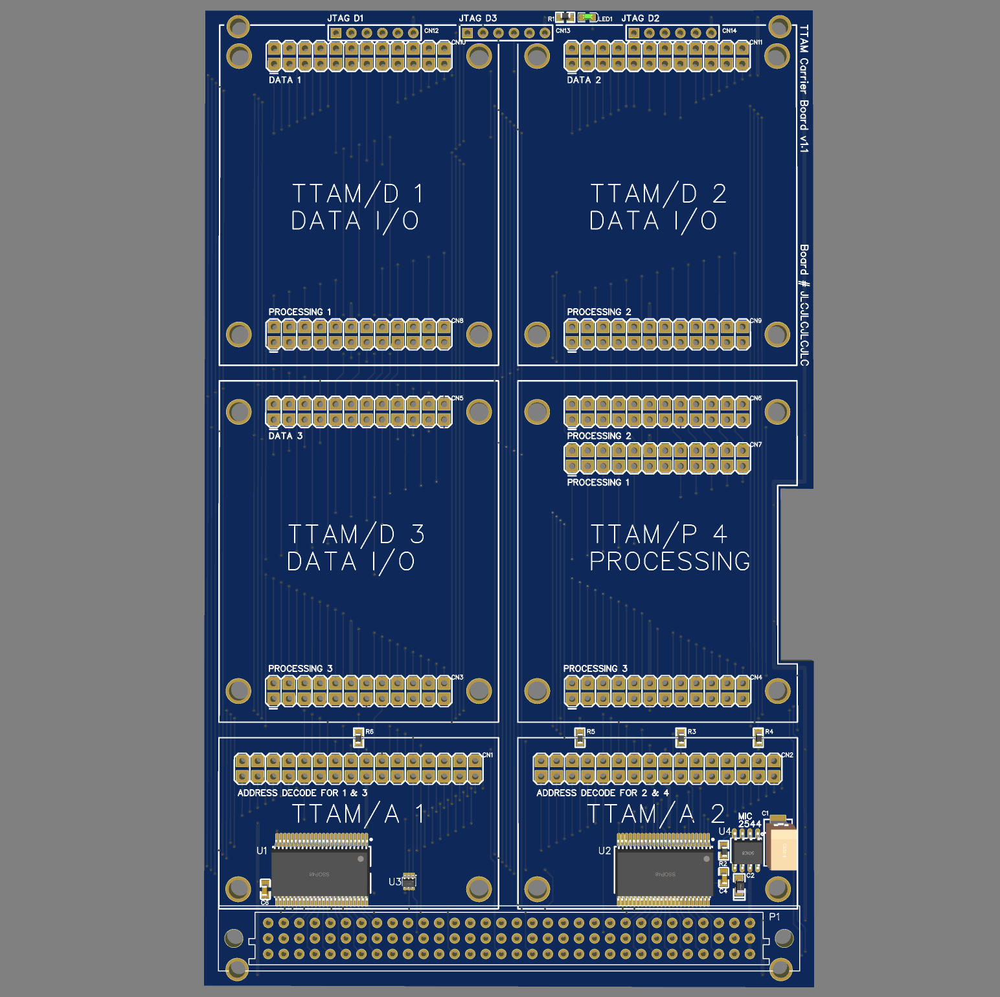

TTAM: Transport Triggered Architecture - Modular
Design and implementation guide, Revision 1
Table of Contents
Introduction
A Transport Triggered Architecture (TTA) is a type of computer processor design where software instructions directly control the movement of data between processor components. Unlike traditional processor designs, there is only one instruction, mov dst <= src, where computation occurs as a side effect of data movement.
This project covers the documentation of a modular TTA implementation based around a series of 3U Eurocard carrier boards connected over a standard VME backplane. Each board hosts one or more TTA modules (TTAMs) that implement various function units. Examples of function units include everything from basic ALU operations, such as addition, multiplication, bit-wise operations, registers, memory, and all the way up to full I/O and complex processing units.
The goal of this project is to refresh my hardware design skills by implementing a "retro-computer" system that would have been state of the art in the 1980's. Whenever possible, components available in the 1980's have been used. Nothing in this project is particularly innovative, and everything associated with this project is released into the public domain.
Bus Design
TTAM is a hybrid 16/8-bit system, with a data width (and instruction length) of 16 bits, and an address width of 8 bits. While a standard VME backplane is used, it is important to emphasize that TTAM is not compatible with VME cards.
Address Bus
The address bus is split into two 8-bit address busses: the src address bus and the dst address bus. This means that the system is only able to directly address 256 addresses, which are known as sockets.
The address bus lines are mapped to the VME pins A01 through A16.
Data Bus
The data bus is a standard 16-bit bus.
The data bus lines are mapped to the VME pins D00 through D15.
Control Lines
Bus operations are controlled by three strobe lines: the address strobe, the data strobe, and the Data Acknowledgement (DACK) strobe. This approach allows the system to be run sychronously or asynchronously.
The control lines are mapped to the VME pins as follows:
- Address Strobe - AS*
- Data Strobe - DS0*
- DACK Strobe - DTACK*
Asynchronous Bus Operation
TTAM mov instructions, literal encodings of source and destination addresses, are placed onto the address bus by a bus master, causing a first function unit write to the data bus, and a second function unit to read from the data bus. The bus cycle is typically managed by the Program Counter Control System (PCCS), but can be driven by any bus master.
- The PCCS first places the instruction onto the bus, and asserts the address strobe (a).
- The rising edge of the address strobe (a) indicates that the address bus has stabilized, and triggers the source function unit (addressed by the
srcaddress on the address bus) to write to the data bus (b). Once the data bus has stabilized, the source function unit asserts the data strobe (c). - The rising edge of the data strobe (c) triggers the destination function unit (addressed by the
dstaddress on the address bus) to read from the data bus. When the read operation is complete, DACK is strobed (d). - The rising edge of the DACK strobe tells the source function unit to stop driving the data bus, and triggers the PCCS to proceed to the next instruction.
The absence of a data strobe indicates a source address bus error and will halt execution. The absence of a DACK strobe indicates a destination address bus error and will halt execution. In both cases, the invalid address will remain present on the address bus. Detecting these conditions can be used to trigger a function unit that jumps to a monitor bus error handler.
Synchronous Bus Operation
In synchronous operation, the clock must be slower than the slowest function unit. The address strobe line is connected to the clock, and the data strobe line is connected to the clock through an inverter. DACK is ignored.
Bus Decoding
For Functional Units to be triggered, the address bus must be decoded, and the control signals must be sequenced.
When the src and dst addresses are placed on the address bus, if the specified src address matches the base address programmed for a given functional unit, the address decode line is pulled low. This acts as an enable to allow the address strobe to be latched, and tell the functional unit to drive the data bus. The functional unit read select (RS) remains low until DACK is strobed. If the specified dst matches the base address, when the Data Strobe is asserted, the functional unit write select (WS) is pulled low for the duration of the strobe.
An example of the logic for when there are two functional units sharing the same base address, and selected by the A0/A8 line, is shown below:
Bus Arbitration
When a inactive bus master wants to become active, it first checks if IACK* is low. If IACK* is low, another inactive bus master has already requested to become active, and the inactive bus master must wait. If IACK* is high, the inactive bus master drives the IACK* low. When the active bus master detects IACK* is low, when it is able and willing to release the bus, it strobes DS1*. When the inactive bus master that is waiting for bus access detects the DS1* rising edge, it becomes the active bus master, and stops driving IACK* low.
IACK* is an open-collector bus line.
Carrier Card (TTAM/C)
The TTAM carrier card is a standard 3U 160 mm Eurocard board that conforms to the VME mechanical specification. It provides bus isolation, power conditioning, and has sites to plug in two TTAM/A address modules, three TTAM/D data modules, and one TTAM/P processing module.
Bill of Material:
| Number | Part | Description |
|---|---|---|
| C1 | Main supply bulk capacitor - Value TBD | |
| C2 | 1 uf SMT supply filter capacitor | |
| C3, C4 | 0.1 uf SMT decoupling capacitor | |
| CN1, CN2 | 32-pin 2-row connector for TTAM/A | |
| CN3 - CN11 | 24-pin 2-row connector for TTAM/D and TTAM/P | |
| CN12 - CN14 | 6-pin 1-row connector for JTAG | |
| P1 | Right-angle euro-DIN three-row connector | |
| R1 | 2.2 k SMT resistor | |
| R2 | 230 ohm SMT resistor | |
| R3 - R6 | 10 K SMT pull-up resistor | |
| LED1 | SMT LED | |
| U1, U2 | SN74ABT16245ADLR | Transceiver, Non-Inverting 2 Element 8 Bit per Element 3-State Output |
| U3 | 74LVC1G11GW | Single 3-input AND gate |
| U4 | MIC2544-1YM | Hot Plug power controller |
TTAM/D Connectors
Each TTAM/D module has two 24-pin connectors.
Data Bus Connector (Top Connector)
The TTAM/D top connector carries the data bus and control lines. The pinout is as follows:
The following connector pins are defined:
- D00 through D15 are input/outputs that connect to the system data bus through a '245 bus transceiver.
- TDI, TCK, TMS and TDO provide JTAG boundary scan access.
- WS (Write Select) is an input that is set high when a value is to be written to the functional unit (read from the data bus).
- WA (Write Acknowledge) is an output that indicates when a write has successfully stored the value from the bus. It is typically connected to the WS line, either directly or through a delay element.
- RS (Read Select) is an input that is strobed high when a value is to be read from the functional unit (to drives the data bus).
- RA (Read Acknowledge) is an output that indicates when a value being read (driving the data bus) has stabilized and the value on the bus can be written to another functional unit. It is typically connected to the RS line, either directly or through a delay element.
Processing Connector (Bottom Connector)
The TTAM/D bottom connector carries signals to the TTAM/P module. The pinout is as follows:
The following connector pins are defined:
- P00 through P15 are an internal data bus connecting the TTAM/D to a TTAM/P.
- G0 through G5 are general purpose pins. G0 is connected to either the G0N or G0S pin on the corresponding TTAM/A.
- G4 and G5 on TTAM/D position #3 are connected to IACK* and DS1*, respectively.
- PWR and GND provide power and ground, respectively.
TTAM/P Connectors
Each TTAM/A module has three 32-pin connectors.
Processing Connectors
Each TTAM/P module has up to three 24-pin connectors, each with the pinout described above for the TTAM/D processing connector. Each of the three processing connectors are connected to the corresponding TTAM/D processing connector.
TTAM/A Connectors
Each TTAM/A module has a single 32-pin connector.
Address Bus Connectors
The TTAM/A connector carries address bus and control lines. The pinout is as follows:
The following connector pins are defined:
- A00 through A15 are input/outputs that connect to the system address bus a '245 bus transceiver. These lines are only driven as outputs when the board is acting as a bus master.
- AS, DS, and DA are connected to the Address Strobe, Data Strobe and Data acknowledge lines, respectively. These are used by the TTAM/A to control the read and write control lines.
- WSN/WSS are outputs that are connected to the WS input on the upper (north) and lower (south) TTAM/D modules.
- WAN/WAS are inputs that are connected to the WA input on the upper (north) and lower (south) TTAM/D modules.
- RSN/RSS are outputs that are connected to the RS input on the upper (north) and lower (south) TTAM/D modules.
- RAN/RAS are inputs that are connected to the RA input on the upper (north) and lower (south) TTAM/D modules.
- G0N/G0S are outputs that are connected to the G0 input on the upper (north) and lower (south) TTAM/D modules. This is typically for general purpose connections to TTAM/P modules.
- ADIR is an output that controls the '245 and is used to write to the address bus. This line should be left disconnected unless the card acts as a bus master.
- PWR and GND provide power and ground, respectively.
JTAG Boundary Scan Connector
Three six-pin JTAG ports are located at the front of the card, and is connected to each of the TTAM/D data bus connectors. This allows for boundary-scan automated testing of a function unit without having to connect it to the bus.
Manual Bus Display System (MBDS)
The MBDS is a dedicated card that displays the current state of the address and data busses, plus control signals, in binary. There are two modes of operation, a first mode displays the current bus state, and a second mode where the contents of one or two optionally installed register TTAM/D (and corresponding TTAM/As) is displayed. Four IDTQS3390 bus switches are used to switch between the bus signals and the outputs of the TTAM/D modules.
In the second mode of operation the functional unit occupies a memory space of 21:
Addr RW Description
----------------------------------------------------
base + 0 RW Display Register 0 (data)
base + 1 RW Display Register 1 (address)Manual Bus Control System (MBCS)
The MBCS is a dedicated bus-master card used to manipulate the bus state, single step the system, and transfer control between bus masters. There are two modes of operation, a first mode directly controls the current bus state, and a second mode where the contents of one or two optionally installed register TTAM/D (and corresponding TTAM/As) can be read.
In the second mode of operation the functional unit occupies a memory space of 21:
Addr RW Description
----------------------------------------------------
base + 0 RO Data Bus Switch Value
base + 1 RO Address Bus Switch ValueData Modules (TTAM/D)
Immediate Value Function Unit (IVFU)
The IVFU TTAM/D transfers an 8-bit literal value from the address bus into a data register. This is accomplished by overloading the dst address to use as the literal. When an instruction src address targets the IVFU, the IVFU takes the dst address, and stores it into an immediate value register.
The functional unit occupies a memory space of 22:
Addr RW Description
----------------------------------------------------
base + 0 RO Lower 8 bits immediate
base + 1 RO Upper 8 bits immediate
base + 2 RO Immediate value register
base + 3 NA Unused (address reserved for north position)If an IVFU is located at the base address 0x08 and the MBDS is located at the base address 0x04, to transfer the value 0x0B0E into the immediate value register, then to display it on the MBDS output, the following TTAM code would be executed:
mov 0x0E <- 0x08
mov 0x0B <- 0x09
mov 0x05 <- 0x0AThe IVFU does not strobe the data strobe line, and skips the store phase by skipping to strobing the DACK line. This is the only function unit that has this behaviour.
The IVFU is implemented as a combination TTAM/D + TTAM/A module. As such, it can only be installed in TTAM/D position 3.
Generic Register Data Module (GRAM)
When fully populated, the GRDM implements a single read-write register that can be used stand-alone or connected to a processing module.
WA is connected to G3 to signal to the TTAM/P when a new value has been written.
RS is connected to G1 to signal to the TTAM/P when a value is being read been written, and pulling G2 low allows the processing module to drive the bus.
G2 is connected to the output latch enable. Pulling G2 low allows the processing module to drive the bus.
When half-populated (U1, U2, U6, U7, U11, and U12), the GRAM implements a single read-only register driven by an output from a processing module.
Scan-test latches are used to allow a function unit to be tested independently of the rest of the system.
In order to allow the register to operate asynchronously, two delay lines are included, which provide the delay between when read select goes high and when the bus has stabilized, and to provide a delay between when write select goes high and the bus value has been successfully stored.
Bill of Material:
| Number | Part | Description |
|---|---|---|
| C1 - C6 | 0.1 uf SMT decoupling capacitor | |
| CN1, CN2 | 24-pin 2-row connector | |
| R1 - R3 | 2.2 k SMT resistor | |
| R4 | 50 k SMT resistor (pull-up) | |
| LED1 - LED3 | SMT LED | |
| U1 - U4 | SN74BCT8374A | Octal D-Type Edge-Triggered Flip-Flops |
| U5, U6 | DS1007S-2 | 7-1 Silicon Delay Line |
| U7, U8, U13 | 74LVC1G04GW | Single inverter |
| U9, U11 | 74LVC1G86GW | 2-input EXCLUSIVE-OR gate |
| U10, U12 | 74AUP1G09GW | Single 2-input AND gate with open drain |
The address of the GRDM register depends on the position it is installed on, and the base address of the corresponding GRAM.
Addr RW Description
----------------------------------------------------
base + 0 RW Register in south position
base + 1 RW Register in north positionProcessing Modules (TTAM/P)
Arithmetic Logic Function Unit (ALFU)
Paged Memory Function Unit (PMFU)
The PMFU TTAM/P provides a 16 or 32 address window into a larger 221 bit memory bank.
Depending on the configuration jumper, the address map occupies either memory space of 24 or 25:
Addr RW Description
----------------------------------------------------
base + 0 RW Memory window 0
base + 1 RW Memory window 1
...
base + N-1 RW Memory window 14
base + N RW PageThe PMFU is implemented as a combination TTAM/P + TTAM/A module, and requires two GRDM TTAM/D modules, one for the page access and one for memory access, installed in positions 1 and 2. The PMFU is typically co-hosted with the IVFU on a single TTAM/C.
Stack Memory Function Unit (SMFU)
Queue Memory Function Unit (QUFU)
Address Modules (TTAM/A)
Generic Register Address Module (GRAM)
The GRAM provides read and write address decoding, and is implemented as a standard TTAM/A module. The circuit implemented as described in the Bus decoding section.

Bill of Material:
| Number | Part | Description |
|---|---|---|
| C1, C2 | 0.1 uf SMT decoupling capacitor | |
| CN1 | 32-pin 2-row connector | |
| DSW1 | 6 position SPST DIP switch | |
| R1, R2 | 2.2 k SMT resistor | |
| SRC, DST | SMT LED | |
| U1, U2 | IDT74FCT521BTSO | 8-bit Identity Comparator |
| U3, U4 | 74LVC2G00DP | Dual 2-input NAND gate |
| U5, U6, U9, U10 | 74LVC1G04GW | Single inverter |
| U7 | SN74LVC1G175DBV | Single D-Type Flip-Flop With Asynchronous Clear |
| U8 | 74LVC1G02GW | Single 2-input NOR gate |